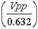
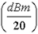
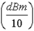

Operating Documentation
Direction 5133315-3, Rev# 14
Signa EXCITE HD 1.5T Service Methods
Module Version 3.0, Version Date 11/5/09
Operating Documentation |
Software are described and formulae are presented in this section that will allow the FE to perform various conversions and calculations.
The first tool, the RF Power Calculator, is a UNIX-based application available on the LX system under the Toolbelt icon, [Utilities], [RF Calculator], [Start]. Watts to dBm, dBm to Watts, relative volts to relative power, and relative power to relative volts conversions can be done with the RF Power Calculator tool.
The second tool, the Power Calculator, is an HTML document that is available. This tool will run from either the laptop PC or MR host computer. The tool can manually be started from the laptop PC by selecting [Start], [Run], and then entering the following file pathname in the “Open” entry box: E:content\power\pwrcalc.htm. Next, select [OK]. The tool is divided into 3 sections. The first section allows one to calculate RF power from measured peak voltage when using a 100 MHz oscilloscope and a properly characterized RF cables kit and dummy load. The second section provides Vpp to dBm, dBm to Watts, and dBm to Vpp conversion capability. The third section provides short instructions and a means for comparing the attenuation in dB reported on each RF Power Measurement Kit Card with the measured Magnitude Squared Attenuation Factor reported by the Attenuation Test tool that is described in DUMMY LOAD AND CABLES CALIBRATION.
These are provided to assist the experienced FE with RF power measurement and troubleshooting. The RF conversions below are presented in two different formats. The first format is the actual mathematical formula. The second format assumes that you are entering the data into the LX system calculator exactly as you read it (Access the LX system calculator by right mouse clicking in the background and then selecting the calculator from the Root menu.).
VP-P to dBm Calculation:
dBm = 20 log 
VP-P [÷] 0.632 [=][LOG][*] 20 [=] dBm.
dBm to VP-P Calculation:
Vpp = 10 
dBm [÷] 20 [=][INV LOG][*] 0.632 [=] VP-P.
Example: Using 3.65 dBm, the Scope Power reading listed on a particular Kit card, and the LX system calculator to determine the equivalent Vpp:
3.65 [÷] 20 [=] (0.1825) [INV LOG] (1.5222991) [*] 0.632 [=] (0.9620931) VP-P.
dBm to Watts Calculation:
Watts = 10 
dBm [÷] 10 [=][INV LOG][=][*] 0.001 [=] Total Watts.
The 1.5T division conversion below may be useful for the FE using the RF Power Measurement Kit and attempting to measure a signal that requires more resolution that the "division" unit provides. These examples are provided as a general reference and are not intended to be used to perform the power monitor check.
1.5T Division Conversion example:
1.5T sites using the 1.5T Scope Calibrator and 100 MHz Oscilloscope equipment:
= = 0.025 VPP each Minor Division
0 dBm = = 25.28 Minor Divisions
25.28 Minor Divisions = 5 Major Divisions and .28 of a Minor Division